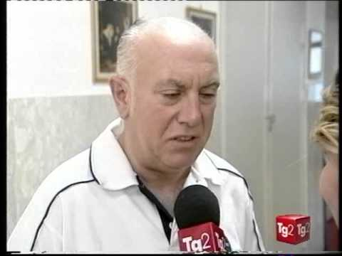
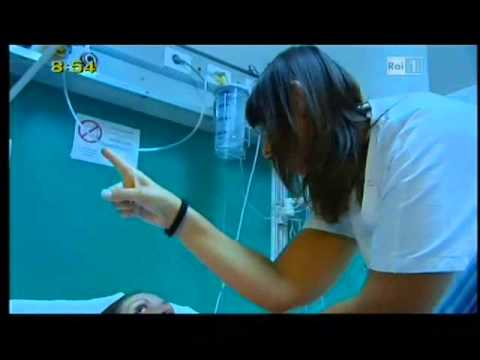
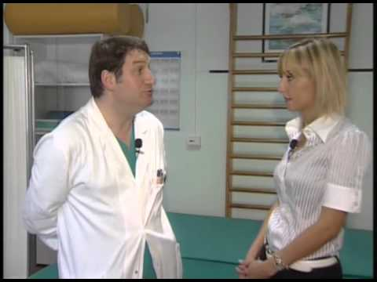

Il Dott. Giuseppe De Marchis in TV
Tra le mie esperienze ho spesso affiancato i docenti del policlinico Umberto I di Roma, in trasmissioni di approfondimento e informazione legati al mondo della Neuro Riabilitazione. Di seguito alcuni passaggi televisivi.
Medicina 33 RAI2 - Sclerosi Laterale Amiotrofica 27 Gennaio 2010

Ospite di Uno Mattina RAI 1 - L'unità di pronto intervento per Ictus ed emergenze Neurologiche

Ospite di Uno Mattina RAI 1 - Trattamento dell'ICTUS
Intervista al Centro di Riabilitazione Neurologica dell'Università La Sapienza di Roma
Intervista a Rai Notte, Aperto per ferie
